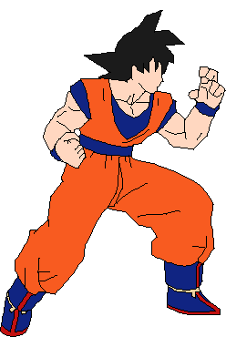

Dragon Ball é um anime e mangá de ação e aventura criado por Akira Toriyama. A história segue as aventuras de Goku, um guerreiro alienígena que luta para proteger a Terra de vários vilões, incluindo alienígenas, robôs e seres mágicos. Ao longo da série, Goku e seus amigos se tornam cada vez mais poderosos, aprendendo novas técnicas de luta e enfrentando inimigos cada vez mais desafiadores. Dragon Ball é conhecido por suas cenas de luta épicas, personagens icônicos e senso de humor peculiar. A série também gerou várias adaptações para outras mídias, incluindo jogos de videogame, filmes, séries de televisão e mangás spin-off.